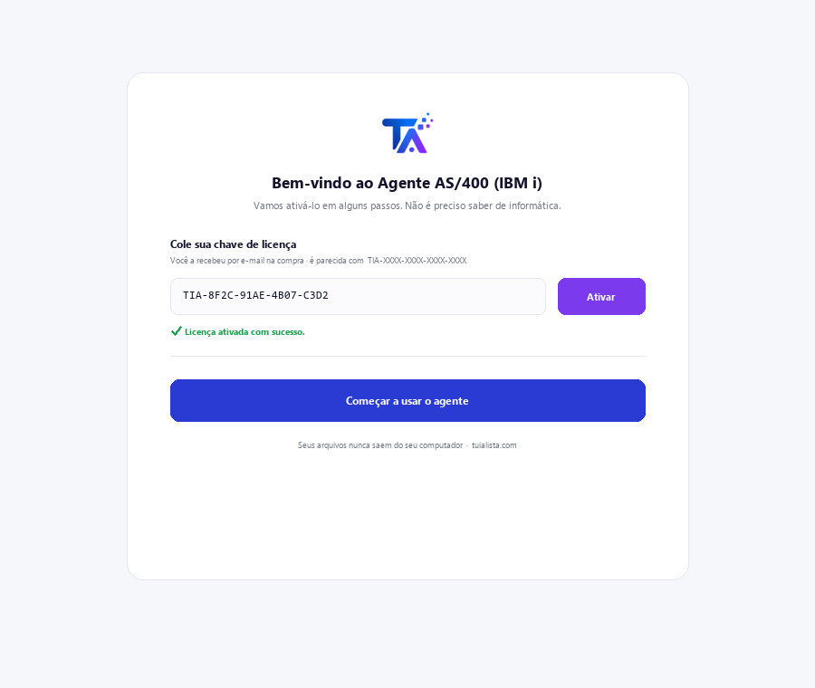
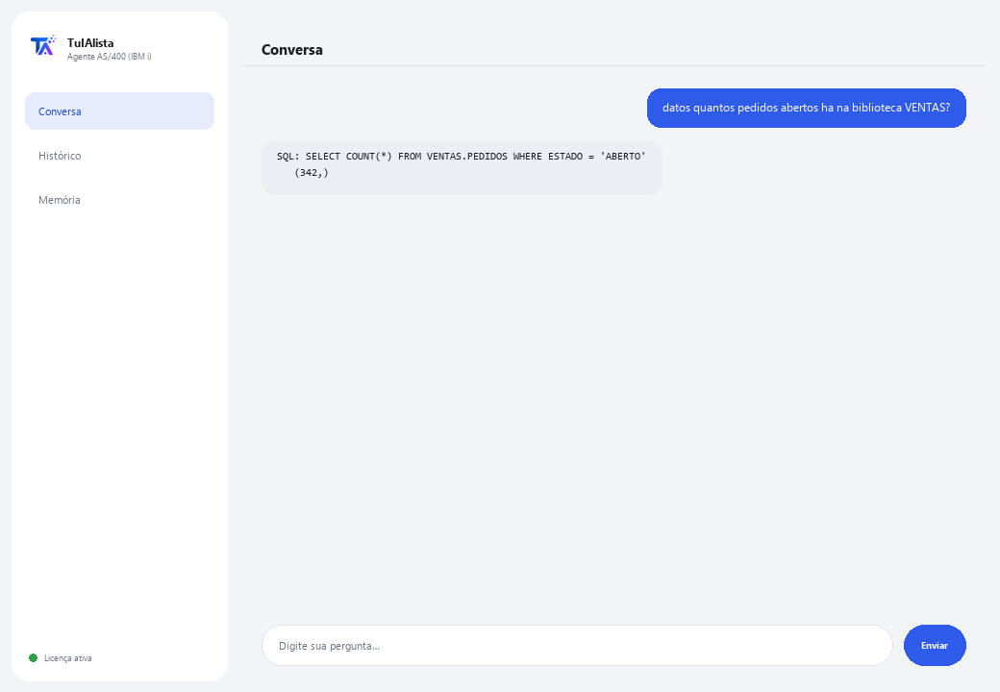

Agente AS/400 (IBM i) · Premium
Consulte seu DB2 for i em linguagem natural e entenda código RPG/COBOL legado — sem saber SQL nem o sistema.
O que resolve e o que você precisa?
Talento em IBM i é escasso globalmente. Este agente é a ponte entre seu sistema AS/400 legado e a linguagem natural: você pergunta e ele retorna dados reais do DB2 for i, ou você passa um fonte RPG/COBOL e ele explica sem termos técnicos.
- Você precisa: sua chave de licença (TIA-XXXX-XXXX-XXXX-XXXX) e acesso ao IBM i (host, usuário e senha, com o IBM i Access ODBC Driver instalado). Pensado para um perfil técnico (TI / administração de IBM i).
- Primeiro resultado: instala, ativa sua licença e, depois de configurar a conexão, roda datos <sua pergunta>.
- Seu IBM i, seus dados e seu código nunca saem da sua rede — a conexão e as consultas acontecem localmente.
soporte@tuialista.com ou acesse tuialista.com/soporte — normalmente respondemos no mesmo dia útil.1 O que este agente faz
Resolve duas dores caras e difíceis de cobrir por causa da escassez mundial de talento em IBM i:
- Consulta de dados no DB2 for i sem saber SQL nem o sistema. Você pergunta em linguagem normal e o agente gera uma consulta SELECT do DB2 for i (somente leitura), executa e mostra o resultado.
- Entender código RPG e COBOL legado. Você passa um fonte RPG/COBOL e ele explica em linguagem clara: o que faz, quais dados manipula e o que produz, sem presumir que você conhece a linguagem.
Tudo acontece local, dentro da sua rede: a conexão com o IBM i e os dados nunca saem da sua infraestrutura.
2 Instalação
Para Windows. Este agente tem um passo extra em relação aos outros: a conexão com o IBM i é configurada à parte, não pela janela de ativação.
Baixe o instalador em tuialista.com/descargar (agente AS/400) e abra-o. Ele cria um atalho na sua área de trabalho com o logo — não precisa de Python nem terminal.
Dê duplo clique no novo ícone. Cole sua chave de licença (você a recebeu por e-mail na compra) e clique em Ativar. Diferente de outros agentes, ele não pede para escolher uma pasta — este agente se conecta a um banco de dados, não a arquivos locais.
Instale o IBM i Access ODBC Driver (do IBM i Access Client Solutions) no computador onde roda o agente, e defina as variáveis de ambiente AS400_HOST, AS400_USER e AS400_PASSWORD com os dados do seu sistema. Este passo normalmente é feito pela equipe de TI.

3 Como usar
O agente abre uma janela de chat, como um app de mensagens — não é uma tela preta de programador. Tem dois comandos além de salir:

> datos <pergunta>Você escreve sua pergunta em linguagem natural. O agente gera uma consulta SELECT do DB2 for i (sintaxe BIBLIOTECA.TABELA), valida como somente leitura e executa. Ex.: datos quantos pedidos abertos há na biblioteca VENTAS? Os resultados são limitados a 100 linhas por consulta.
> explica <arquivo>Você passa o caminho de um arquivo com código-fonte RPG ou COBOL e ele explica seu propósito, os dados que manipula e o que produz, sem termos técnicos desnecessários.
> sairEncerra a sessão (exit também funciona).
4 Exemplos de uso comum
Uma contagem operacional
datos quantas notas fiscais foram emitidas ontem?
Um total a partir de uma tabela física
datos soma o valor dos pedidos da biblioteca VENTAS deste mes
Explicar um programa que “ninguém entende”
explica /home/fontes/CALCNOM.cbl — ideal quando você herda milhares de linhas de RPG/COBOL sem documentação.
Fazer a ponte para o moderno
Use datos para extrair números do IBM i e levá-los para um relatório ou painel, sem expor o sistema legado a ferramentas externas.
5 Perguntas frequentes
Ele pode modificar ou danificar os dados de produção do IBM i?
Preciso do driver da IBM obrigatoriamente?
Os dados do IBM i saem da minha rede?
Quais linguagens de código ele pode explicar?
Ele gera SQL padrão ou do DB2 for i?
Quantas linhas uma consulta retorna?
Em que idioma ele responde?
Por que ele é “Premium”?
Posso apontar para várias bibliotecas?
O SQL gerado é sempre correto?
6 Solução de problemas
“Falta pyodbc e o driver 'IBM i Access ODBC Driver'”
Não conecta ao IBM i
“Só são permitidas consultas de leitura (SELECT)”
Diz “Licença inválida” ou pede para reconectar
“Nenhum provedor de IA configurado”
Nenhuma dessas soluções resolveu seu problema? Escreva para nós diretamente — teremos prazer em revisar com você.
soporte@tuialista.com ou acesse tuialista.com/soporte — normalmente respondemos no mesmo dia útil.7 Privacidade e confidencialidade
Seu IBM i, seus dados e seu código nunca saem da sua rede.
- O agente se conecta ao IBM i localmente (dentro da sua rede) e executa as consultas ali. Os resultados não são enviados para nenhum servidor.
- Só é enviado à IA o esquema (nomes de tabelas/colunas) e sua pergunta para redigir a consulta SELECT, ou o fonte RPG/COBOL que você pedir para explicar. Os dados retornados por uma consulta não são transmitidos ao motor de IA.
- A única coisa que trafega pela internet é: (1) uma verificação de que sua licença está ativa, e (2) o contexto necessário (esquema + pergunta, ou o código a explicar) para gerar a resposta.